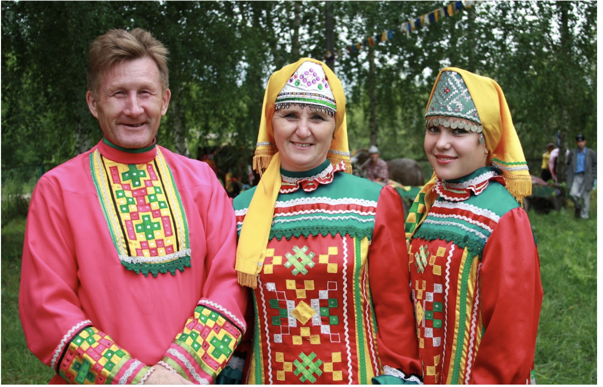

Удмурты - финно-угорский народ, проживающий преимущественно в Удмуртии, известный своими яркими культурными традициями, включающими уникальные обряды, музыку и танцы.
Удмурты - финно-угорский народ, проживающий преимущественно в Удмуртии, известный своими яркими культурными традициями, включающими уникальные обряды, музыку и танцы.
Удмуртская культура характеризуется глубоким уважением к природе, народным искусством и ремеслами, яркими национальными праздниками, а также уникальной музыкальной и танцевальной традицией.
Традиционная удмуртская одежда отличается яркими цветами и сложными узорами, часто включающими вышивку и бисероплетение, символизирующими природу и национальные мотивы.
Быт удмуртов традиционно основывается на земледелии и скотоводстве, с особым упором на использование местных природных ресурсов, включая леса и реки.
Удмурты сохранили элементы языческих верований, включая поклонение природным духам и божествам, хотя многие также исповедуют православие. Языческие обряды и традиции играют важную роль в культурной жизни.
Удмуртская литература включает народные эпосы, сказания, исторические легенды, а также современные литературные произведения, отражающие уникальную культуру и историю народа.
|  |